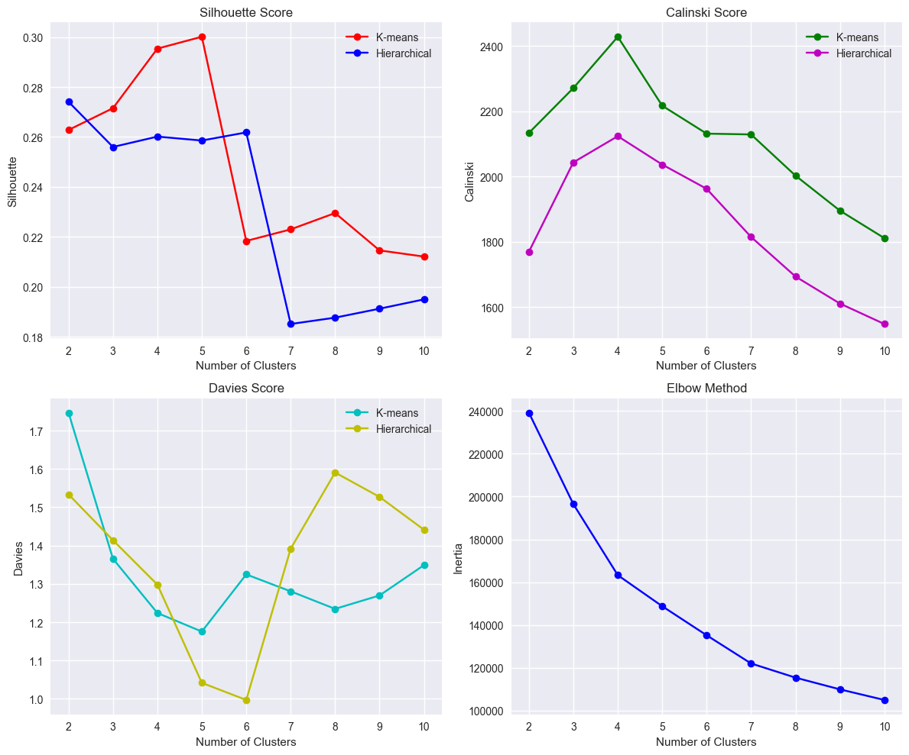
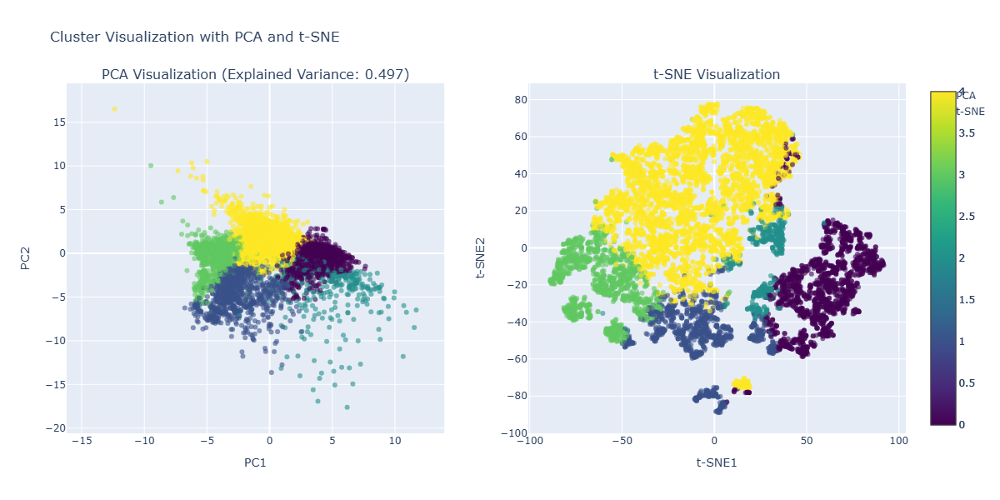
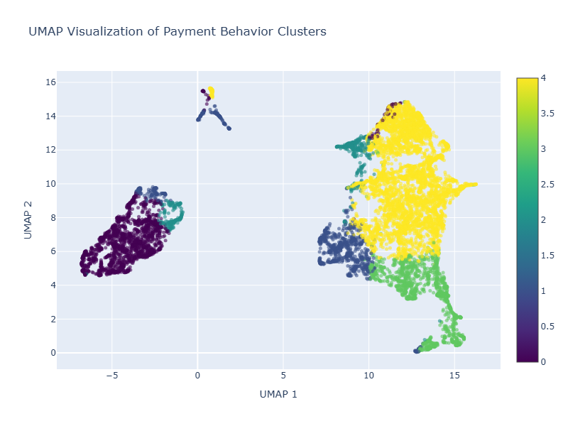
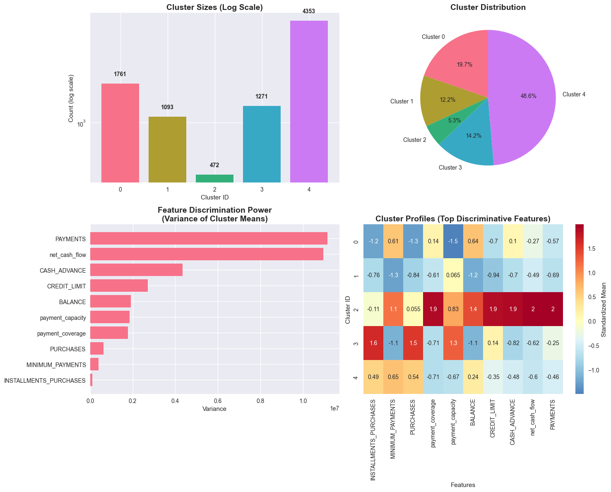
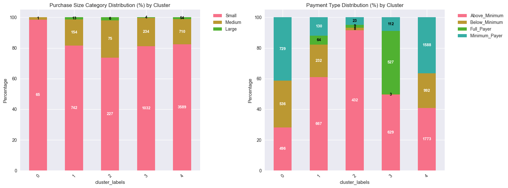

This project tackles the challenge of understanding customer behavior patterns in credit card usage to optimize risk management, enhance customer experience, and maximize revenue through targeted strategies. By applying advanced machine learning techniques to analyze 8,950 credit card customers, I identified 5 distinct behavioral segments that reveal critical insights for strategic decision-making.
30-Second Overview: Through sophisticated clustering analysis, I discovered that payment behavior is a stronger predictor of customer value than usage volume. This analysis uncovered "Hidden Gems" - 5% of customers previously misclassified as high-risk who are actually premium customers worth $665 each. The segmentation enables targeted strategies that could generate $3.2M+ in new revenue and prevent $1.8M in defaults.
Credit card companies need to understand customer behavior patterns to optimize risk management, enhance customer experience, and maximize revenue through targeted strategies. Traditional models often misclassify customers based on usage volume alone, missing opportunities to identify high-value segments and properly manage risk across diverse customer types.
The analysis utilized credit card transaction and payment data containing 8,950 records of active cardholders over 6 months. The dataset included comprehensive behavioral tracking of spending patterns, payment habits, credit utilization, and cash advance usage with 100% data quality (no missing values).
My approach followed a structured data science workflow focused on generating actionable business insights:





Comprehensive dashboard showing real-time segment distributions, key performance metrics, and strategic business intelligence insights.
Cash advance dependent users with poor payment discipline (70% minimum/below payments). Average cash advances $1,753 vs $2 purchases.
Conservative, low-activity users with balanced product usage and moderate payment discipline (60% above minimum).
Sophisticated users with highest activity but BEST payment discipline (90% above minimum payments). Premium opportunity, not risk!
High-spending customers with excellent payment behavior. 40% full payments + 50% above minimum, highest value $802.
Mainstream users who consistently carry balances. 97% always carry balance, 35% pay minimum only.
The analysis reveals that payment discipline is the strongest predictor of customer value and risk, not transaction volume or credit utilization alone.
Move 5% of customers from "high-risk" to "premium" category. Increase credit limits and offer sophisticated financial tools. Expected value: $313,880/month.
Implement immediate risk controls for Emergency Borrowers. Reduce credit limits, restrict cash advances, and provide financial counseling to prevent $1.8M in defaults.
Enhance rewards and benefits for Premium customers. Increase retention through exclusive perks and proactive credit limit increases. Target 25% spending increase.
Engage Cautious Savers with category rewards and spending challenges. Target doubling average spending from $321 to $650 through gamified experiences.